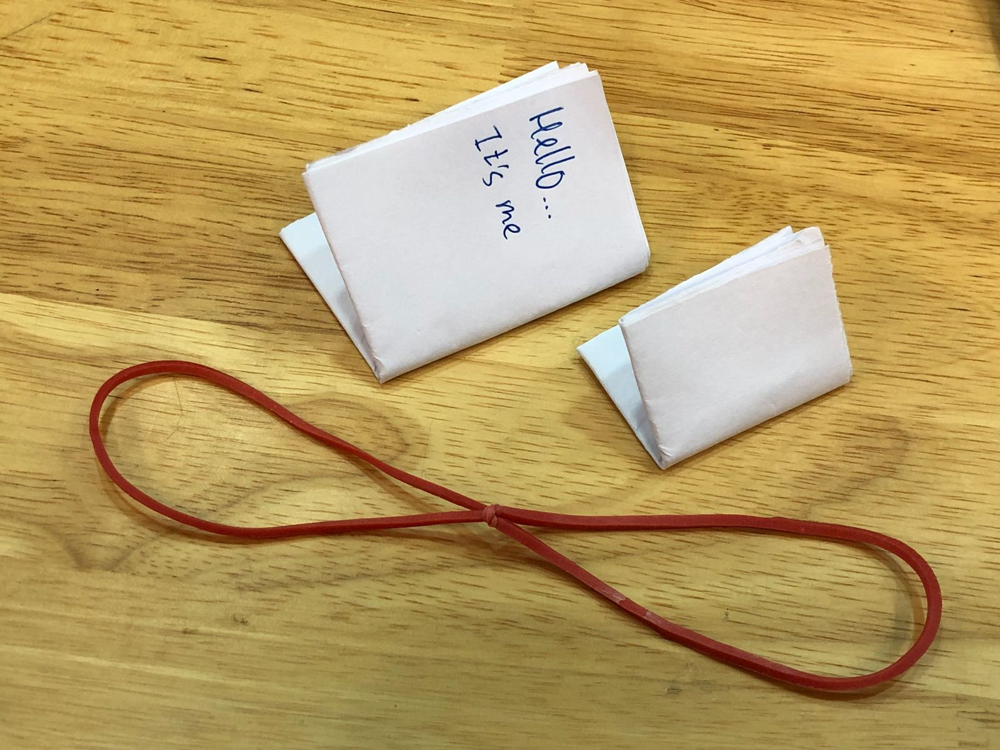

Home
This is the home page of team F* projects. Here is where you will see our inventions and what we come up with for the EA programme
On our website you will see our projects and what we do in Engineering accademy!
More details on our blog:)
The project we are currently working on is inventing a machine to send messages on paper accross a certian distance:o
We have been working for a number of days on this project and have come up wth the following ideas:
- Ninja star
- rubber band sling shot
- Paper airplane
| This is our first idea we thought it was a good idea because it can be thrown long distances, however it is not that accurate and it would be very hard to make a launcher such that it is accurate and far travelling |
|  | This is our second design, where we would make a catapult to shoot the paper message across a certian distance. It is covers the most distance among the three designs but however we would need more experince before we could make a automated catapult for our design so sadly it had to be scrapped |
| Then for our final design, the paper airplane, it is the best choice for the design as it is easy to design a launcher and make it for use where it can shoot the airplane accurately and far! |